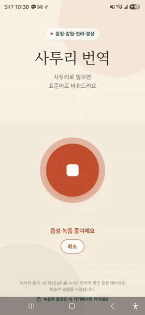

충청·강원·전라·경상 사투리를 표준어로 — 서버 없이 기기 안에서

음성 인식·번역을 휴대폰 안에서 처리. 첫 실행 1회 다운로드 후 인터넷 없이 동작.
녹음한 음성이 기기를 벗어나지 않음. 서버 전송·저장 없음, 계정 불필요.
표준 모델이 약한 사투리를 AI Hub 방언 데이터로 파인튜닝. STT CER 20.3%→11.7%.
Whisper q5 + KoBART int8로 1.2GB→490MB(−60%), 정확도 저하 없음.